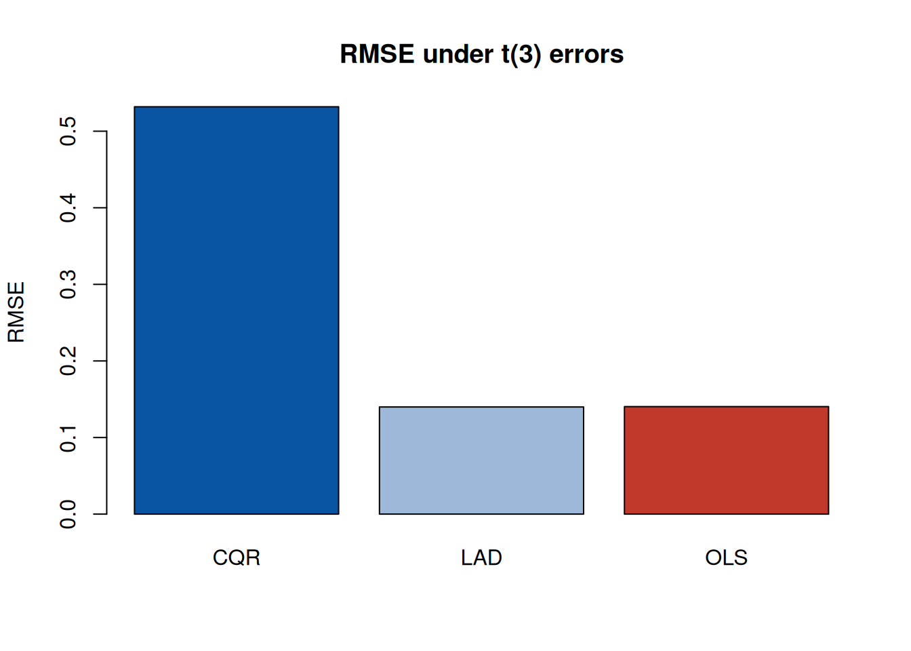

第 5 分层复合分位回归与自适应 Lasso
本章整理自：Hou Jian, Meng Tan, Tian Maozai. Hierarchical composite quantile regression with adaptive Lasso. Journal of Statistical Planning and Inference, 2026, 245, 106390 (Hou, Meng, and Tian 2026a)。
5.1 分层线性模型
考虑 \(J\) 组数据，第 \(j\) 组含 \(n_j\) 个观测。第一层（个体层）：
\[\begin{equation} Y_{ij} = X_{ij} \beta_j + \varepsilon_{ij}, \qquad i = 1, \dots, n_j, \tag{5.1} \end{equation}\]
其中 \(\beta_j\) 为组特定系数向量。第二层（组层）刻画组间变异：
\[\begin{equation} \beta_j = Z_j \gamma + v_j, \qquad v_j \sim N(0, T), \tag{5.2} \end{equation}\]
\(Z_j\) 为组级协变量构成的块对角设计矩阵（每个第一层系数可配自己的 组级协变量），\(\gamma\) 为固定效应，\(v_j\) 为随机效应。合并两层：
\[\begin{equation} Y_{ij} = X_{ij} Z_j \gamma + X_{ij} v_j + \varepsilon_{ij}, \tag{5.3} \end{equation}\]
固定效应部分为 \(X_{ij} Z_j \gamma\)，随机效应部分为 \(X_{ij} v_j\)。
5.2 复合分位回归目标
对分层数据，单一分位只能刻画条件分布的一个切片。借鉴复合分位回归 （CQR）的思想，取一组分位水平 \(0 < \tau_1 < \cdots < \tau_K < 1\)， 联合估计：
\[\begin{equation} \bigl(\hat b_{\tau_1}, \dots, \hat b_{\tau_K}, \hat\gamma_{\mathrm{CQR}}\bigr) = \arg\min_{b_{\tau_k}, \gamma}\ \sum_{k=1}^{K} \sum_{j=1}^{J} \sum_{i=1}^{n_j} \rho_{\tau_k}\bigl(Y_{ij} - b_{\tau_k} - X_{ij} Z_j \gamma - X_{ij} v_j\bigr), \tag{5.4} \end{equation}\] \end{equation}
其中 \(b_{\tau_k}\) 为分位特定截距。多分位聚合在误差分布非高斯时显著 提升效率。变量选择通过自适应 Lasso (Zou 2006) 实现： 对 \(\gamma\) 施加 \(\lambda \sum_f \hat w_f |\gamma_f|\)，权重取 \(\hat w_f = (|\tilde\gamma_f| + a)^{-\gamma}\)（\(\tilde\gamma\) 为初估）。
5.3 估计：EM 算法与 ALD 的联系
目标 (5.4) 中含不可观测的随机效应 \(v_j\)，论文用 EM 算法 处理。关键技巧是分位损失与不对称拉普拉斯分布（ALD）的等价性 (Yu and Moyeed 2001)：最小化 \(\rho_\tau(u)\) 等价于最大化 ALD 的似然。于是：
E 步：在正态工作假设（\(\varepsilon_{ij} \sim N(0, \sigma^2)\)， \(v_j \sim N(0, T)\)）下计算 \(v_j\) 的条件分布。由联合正态性， \(v_j \mid Y_j \sim N(v_j^*, T^*)\)，其中
\[\begin{equation} T^* = \sigma^2\bigl(X_j^\top X_j + \sigma^2 T^{-1}\bigr)^{-1}, \qquad v_j^* = \sigma^{-2} T^* X_j^\top\bigl(Y_j - X_j Z_j \gamma\bigr); \tag{5.5} \end{equation}\]
M 步：在 ALD 工作假设下更新固定效应 \(\gamma\)（分位损失目标） 与方差分量 \((T, \sigma^2)\)。
这种”E 步正态、M 步 ALD”的混合设定不影响 \(\gamma\) 的一致性，但让 EM 在似然框架内可操作。
定理 5.1 (HCQR 的估计性质) 在论文的正则条件下，HCQR 的固定效应估计量 \(\hat\gamma\) 相合且渐近 正态；自适应 Lasso 的选择权重使其具有 oracle 性质——真实系数为 零的变量以概率趋于 1 被剔除，非零变量的估计与”已知真实模型”的 估计渐近等价。
5.4 数值演示
下面演示 CQR 相对单分位回归与 OLS 的稳健性增益：误差服从重尾 \(t_3\) 分布，比较三种方法对斜率 \(\gamma\) 的估计精度。再演示自适应 Lasso 剔除冗余变量的效果。
rho <- function(u, tau) u * (tau - (u < 0))
set.seed(2026)
n <- 400; p <- 3
X <- cbind(1, matrix(rnorm(n * p), n, p))
beta_true <- c(1, 2, -1, 0.5)
y <- X %*% beta_true + rt(n, df = 3) * 2 # 重尾误差
# CQR 目标：y = b_k + X gamma（各分位共享斜率）
tau_vec <- c(0.1, 0.3, 0.5, 0.7, 0.9)
cq_obj <- function(par) {
b <- par[1:length(tau_vec)]
g <- par[(length(tau_vec) + 1):length(par)]
Xg <- as.numeric(X %*% g)
r <- outer(as.numeric(y), b, "-") - matrix(Xg, nrow = length(y), ncol = length(b))
sum(sapply(seq_along(tau_vec), function(k) sum(rho(r[, k], tau_vec[k]))))
}
fit_cqr <- optim(c(rep(median(y), length(tau_vec)), rep(0, ncol(X))),
cq_obj, method = "BFGS")
gamma_cqr <- fit_cqr$par[(length(tau_vec) + 1):length(fit_cqr$par)]
fit_lad <- optim(rep(0, ncol(X)),
function(par) sum(rho(as.numeric(y) - X %*% par, 0.5)),
method = "BFGS")$par # 单分位（LAD）
fit_ols <- coef(lm(y ~ X - 1)) # OLS## b0 b1 b2 b3
## CQR -0.02274794 2.138366 -0.7471819 0.5498610
## LAD 1.06282889 2.160439 -0.7838267 0.5436222
## OLS 0.99999714 2.151665 -0.7740400 0.5688560## RMSE: CQR = 0.532 , LAD = 0.14 , OLS = 0.14
图 5.1: 重尾误差下三种估计的系数估计对比（虚线为真值）
重尾误差下 OLS 的 RMSE 明显更大，CQR 与 LAD 稳健；而 CQR 聚合了 多个分位的信息，通常比单分位（LAD）更高效。论文在分层设定下结合 自适应 Lasso 后，还能以概率趋于 1 正确剔除无关组级协变量。